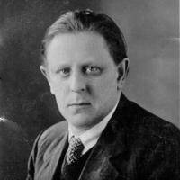
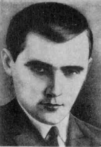
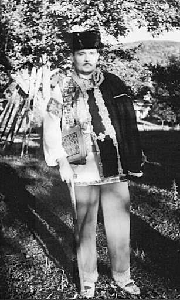
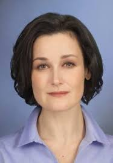
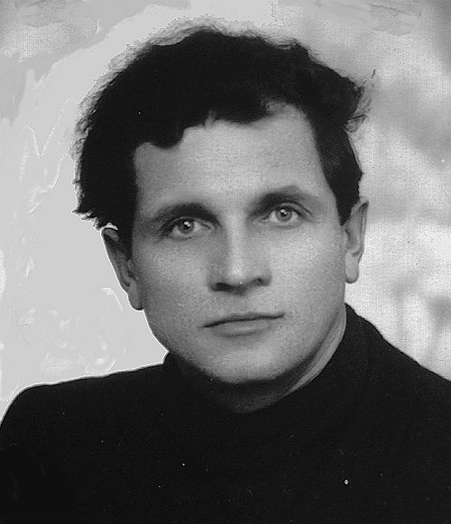
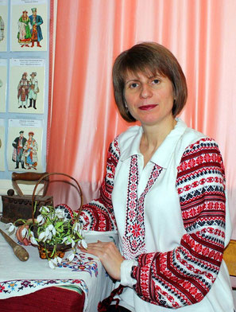

Видатні люди Червонограда

Альфред Абердам
Галицький художник єврейського походження, представник Паризької школи. Народився 14 травня
1894 року в м. Кристинополі в коронному краї Королівство Галичини і Володимирії,
Австро-Угорщини (нині Червоноград Львівської області) у багатій єврейський родині Мойсея
Абердама і Файґи Розентрайх[1]. 1905 року родина перебралась до Львова. 1913 року Абердам
переїздить до Мюнхена, де планує вивчати живопис в місцевій Академії мистецтв. Його
навчання, проте, перериває Перша світова війна. Мобілізований до австрійської армії, Абердам
скерований на східний фронт, де, поранений, він потрапляє до російського полону.
Інтернований в Іркутську, у 1917 році Альфред Аберден потрапляє до Москви, де знайомиться з
російськими футуристами, зокрема Давидом Бурлюком, Володимиром Маяковським, а також з поетом
Сергієм Єсеніним. У Москві майбутній художник вивчає зібрання французького мистецтва
колекціонера Сергія Щукіна.
Пізніше Аберден перебрався до Ленінграда, звідти йому вдалося
втекти до Відня, зрештою, художник знову опиняється у Львові. 1922—1923 він навчається в
Краківській академії мистецтв.
Абердам багато мандрує Європою, зупиняється на певний час у Берліні навчатися у художній
школі відомого українського скульптора та художника О. Архипенка, а після перебування в
Берліні, 1924 р., зупиняється в Парижі, де, разом з співвітчизниками-галичанами Зигмунтом
Менкесом, якому колись порадив займатись реставрацією греко-католицьких церков Галичини,
Йоахімом Вайнгартом та Леоном Вайсберґом створює «Групу чотирьох». Помер 1963 р.

Васи́ль Петро́вич Боби́нський
(11 березня 1898, м. Кристинополь Львівського воєводства; нині Червоноград Львівської області — 8 січня 1938 ГУЛАГ СССР) — український поет, журналіст, перекладач. Член літературної організації «Західна Україна» та ВУСПП.
Жертва сталінського терору.
Народився в родині залізничника. Навчався у гімназіях Львова та Відня. Учасник воєнних дій 1918—1920 у складі Української Галицької армії. 1920 певний час перебуває у Києві. Тут знайомиться з українськими поетами-модерністами, зокрема з Яковом Савченком та Дмитром Загулом. 1921 виїжджає у польську зону окупації України, оселяється у Львові. Редагує разом із Шкрумеляком, Купчинським і Бабієм журнал «Митуса».
Одним із перших серед українських поетів виступив у жанрі еротичної поезії. Це вінок сонетів «Ніч кохання» (написано 1921—1922, а 1923 видано окремою книжкою у львівському видавництві «Молочний шлях»).
У цей час відбувається стрімка ідеологічна ґенеза поета — він починає сповідувати виразно лівацькі ідеї. Від 1923 вже працює у нелегальній комуністичній пресі Польщі, член КПЗУ. 1925 виходить його вірш «Стежка» у дніпропетровському журналі «Зоря». Видавав літературний тижневик «Світло» (1925—1927), був редактором журналу «Вікна» (1927—1930), який поширювався в СССР. Один з організаторів групи промосковських письменників «Горно» у Польщі.
Зазнав переслідувань польської влади. У 1926 у польській в'язниці написав поему «Смерть Франка», яку було з політичних мотивів відзначено премією Народного комісаріату освіти УСРР напередодні 10-ї річниці подій жовтня 1917.
Від 1930 емігрував з Польщі до Харкова, в більшовицьку Україну. Був членом літературної організації «Західна Україна» та ВУСПП, але майже відразу потрапляє від вогонь хамської більшовицької критики. Невдовзі, 25 грудня 1933, заарештований командою НКВД СССР (1933) нібито як член УВО, посаджений у підвал спецкорпусу тюрми НКВС на Чернишевській у Харкові. Прокурор Крайній, якого самого невдовзі уб'ють комуністи, вимагав для поета три роки концтаборів.
1934 Бобинського вивезли у телячих вагонах на каторжні роботи каналу Волга — Москва. По етапу за ним пробувала мандрувати молода дружина із маленькою дитиною, але невдовзі зникла.
1937 його знову заарештовано. 2 січня 1938 засуджений до страти. Розстріляний 8 січня 1938.
Реабілітований 1956 року.

Тарас Йосипович Городецький
(28 серпня 1964, Червоноград — † 21 вересня 2006, Львів) — український писанкар.
Народився в українській родині, батько — колишній розвідник УПА, був засуджений на 25 років таборів Казахстану та Воркути.
Середню школу в Червонограді закінчив із золотою медаллю. Фах інженера–будівельника здобув у «Львівській Політехніці». Писанкою захопився наприкінці 1980–х років. Осягнув цей вид народного мистецтва настільки, що за якихось 10 років став одним з найавторитетніших, найшанованіших майстрів–писанкарів не лише в Україні, а й у цілому світі. Музейні працівники і приватні колекціонери США, Німеччини, Чехії, Польщі, Росії прагнули додати до своїх збірок роботи Тараса Городецького.
Палітра його творчості надзвичайно широка: давні народні символи гармонійному поєднанні, використання трипільської символіки, сокальські і космацькі мотиви. У творчому виконанні Тараса Городецького вони були неперевершені. Композиційна вишуканість, надзвичайно багатий рисунок і колористика, найдосконаліша техніка виконання — ці мініатюрні художні шедеври вирізняються з-поміж усіх інших. Учасник І і ІІ Міжнародного з'їзду писанкарів, член журі І Міжнародного конкурсу дитячої писанки (Івано–Франківськ, 1996 р.).
Помер 21 вересня 2006 р. у Львові, похований у Червонограді.
Згідно із рішенням сесії Червоноградської міської ради № 318 від 04.10.2012 р. нагороджений званням «Почесний громадянин міста Червонограда».

Ната́ля Любоми́рівна Васько́
(19 жовтня 1972, Червоноград) — українська акторка кіно, театру та телебачення, телеведуча. У минулому провідна акторка Київського Молодого театру (1998—2019). Лавреатка національної кінопремії «Золота дзиґа» у 2017 році в номінації «Найкраща акторка другого плану» у фільмі «Гніздо горлиці», в якому вона зіграла роль Галини, української заробітчанки в Італії[3]. Членкиня Української кіноакадемії[4]
Наталя Васько народилася 19 жовтня 1972 року в родині рядового шахтаря в місті Червоноград, Львівщина. У шкільному віці вона займалася в театрі дитячої творчості «Казка», де грала різні ролі: починаючи від принцес і закінчуючи потворами. Але кожна роль приносила їй певне задоволення і досвід.
Після школи з другої спроби вступила до Київського театрального інституту ім. Карпенка-Карого, який закінчила 1994 року (курс Юлії Ткаченко). З 4-го курсу грала в Київському театрі драми і комедії.
У 1998—2019 роках Наталя працювала в Київському Молодому театрі, де протягом багатьох років була провідною акторкою.
Була ведучою шоу «Ранок з „Інтером“» на українському телеканалі «Інтер» у 2008 році.

Васи́ль Миха́йлович Левко́вич
(псевдо: Вороний; 6 лютого 1920, с.Старий Люблинець Любачівського повіту, сучасна Польща[2] — 13 грудня 2012, Львів[3]) — український військовий діяч, полковник Української повстанської армії, командир військового округу «Буг» — частини оперативної групи УПА-Захід (червень 1944 — до арешту 17 грудня 1946).
Лицар Золотого Хреста Бойової Заслуги 2-го клясу.
Золотий хрест Бойової заслуги УПА 2-го класу Василь Левкович отримав у званні майора у 1946 році, будучи командиром Військового округу УПА «Буг». Про присвоєння Золотого хреста стало відомо після того, як у розсекречених архівах СБУ віднайшли копію наказу Української Головної Визвольної Ради № 1/46 від 15 березня 1946 року про удостоєння Василя Левковича цієї нагороди. Повторне нагородження відбулося на урочистому засіданні Львівської обласної ради 5 березня 2008 року, нагороду було виготовлено за кошти благодійників.
Почесний громадянин Червонограда
Є «Почесним громадянином міста Червонограда» (з 2007)

Бурко (Романишин) Юлія Миколаївна
(*6 лютого 1968, с. Надиби Старосамбірського району, Львівської області — *18 травня 2020, м. Червоноград, Львівської області) — писанкарка, активна учасниця культурно-громадського життя м. Червоноград, ініціаторка створення та незмінна голова Незалежного жіночого товариства "Прозерок".
З 1988 року проживає у місті Червонограді. З цього часу працює у міському Будинку дитячої творчості. Юлія Бурко писанкарством захопилася на початку 90-х років минулого століття, організовує гурток у БДЮТ (студiя писанкарства iменi Тараса Городецького). У квітні 2006 року, в Червоноградській філії Львівського національного музею ім. А. Шептицького відбулася презентація першої персональної виставки майстрині — «Чарівний світ писанок». В березні 2007 році у Львівському музеї етнографії і художнього промислу разом із синами Тарасом і Богданом Юлія Бурко (Романишин) представила виставку «Великодні візерунки».